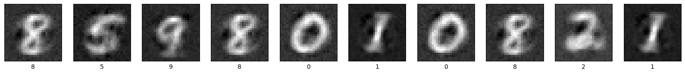
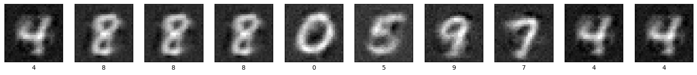

Bidirectional Predictive Coding¤

This notebook demonstrates how to train a bidirectional predictive coding network (BPC; Olivers et al., 2025) that can both generate and classify MNIST digits.
Note: BPC has the same architecture as a hybrid PC network (HPC; Tschantz et al., 2023), but the neural (inference) dynamics are driven by both top-down and bottom-up prediction errors. By contrast, in HPC the amortiser (or bottom-up network) only serves to initialise the inference dynamics.
%%capture
!pip install torch==2.3.1
!pip install torchvision==0.18.1
!pip install matplotlib==3.0.0
import jpc
import jax
import jax.numpy as jnp
import equinox as eqx
import optax
import torch
from torch.utils.data import DataLoader
from torchvision import datasets, transforms
import matplotlib.pyplot as plt
import warnings
warnings.simplefilter('ignore') # ignore warnings
Hyperparameters¤
We define some global parameters, including the network architecture, learning rate, batch size, etc.
SEED = 0
INPUT_DIM = 10
WIDTH = 256
DEPTH = 2
OUTPUT_DIM = 784
ACT_FN = "relu"
ACTIVITY_LR = 5e-1
PARAM_LR = 1e-3
BATCH_SIZE = 64
TEST_EVERY = 50
N_TRAIN_ITERS = 300
Dataset¤
Some utils to fetch MNIST.
def get_mnist_loaders(batch_size):
train_data = MNIST(train=True, normalise=True)
test_data = MNIST(train=False, normalise=True)
train_loader = DataLoader(
dataset=train_data,
batch_size=batch_size,
shuffle=True,
drop_last=True
)
test_loader = DataLoader(
dataset=test_data,
batch_size=batch_size,
shuffle=True,
drop_last=True
)
return train_loader, test_loader
class MNIST(datasets.MNIST):
def __init__(self, train, normalise=True, save_dir="data"):
if normalise:
transform = transforms.Compose(
[
transforms.ToTensor(),
transforms.Normalize(
mean=(0.1307), std=(0.3081)
)
]
)
else:
transform = transforms.Compose([transforms.ToTensor()])
super().__init__(save_dir, download=True, train=train, transform=transform)
def __getitem__(self, index):
img, label = super().__getitem__(index)
img = torch.flatten(img)
label = one_hot(label)
return img, label
def one_hot(labels, n_classes=10):
arr = torch.eye(n_classes)
return arr[labels]
def plot_mnist_imgs(imgs, labels, n_imgs=10):
plt.figure(figsize=(20, 2))
for i in range(n_imgs):
plt.subplot(1, n_imgs, i + 1)
plt.xticks([])
plt.yticks([])
plt.grid(False)
plt.imshow(imgs[i].reshape(28, 28), cmap=plt.cm.binary_r)
plt.xlabel(jnp.argmax(labels, axis=1)[i])
plt.show()
Train and test¤
def evaluate(generator, amortiser, test_loader):
amort_accs = 0.
for _, (img_batch, label_batch) in enumerate(test_loader):
img_batch, label_batch = img_batch.numpy(), label_batch.numpy()
preds = jpc.init_activities_with_ffwd(
model=amortiser[::-1],
input=img_batch
)[-1]
amort_accs += jpc.compute_accuracy(label_batch, preds)
img_preds = jpc.init_activities_with_ffwd(
model=generator,
input=label_batch
)[-1]
return (
amort_accs / len(test_loader),
label_batch,
img_preds
)
def train(
seed,
input_dim,
width,
depth,
output_dim,
act_fn,
batch_size,
activity_lr,
param_lr,
test_every,
n_train_iters,
forward_energy_weight=1.0
):
key = jax.random.PRNGKey(seed)
gen_key, amort_key = jax.random.split(key, 2)
# models (NOTE: input and output are inverted for the amortiser)
generator = jpc.make_mlp(
gen_key,
input_dim=input_dim,
width=width,
depth=depth,
output_dim=output_dim,
act_fn=act_fn
)
amortiser = jpc.make_mlp(
amort_key,
input_dim=output_dim,
width=width,
depth=depth,
output_dim=input_dim,
act_fn=act_fn
)[::-1]
# optimisers
activity_optim = optax.sgd(activity_lr)
gen_optim = optax.adam(param_lr)
amort_optim = optax.adam(param_lr)
gen_opt_state = gen_optim.init(eqx.filter(generator, eqx.is_array))
amort_opt_state = amort_optim.init(eqx.filter(amortiser, eqx.is_array))
# data
train_loader, test_loader = get_mnist_loaders(batch_size)
for iter, (img_batch, label_batch) in enumerate(train_loader):
img_batch, label_batch = img_batch.numpy(), label_batch.numpy()
# discriminative loss & initialisation
activities = jpc.init_activities_with_ffwd(
model=amortiser[::-1],
input=img_batch
)
amort_loss = jpc.mse_loss(activities[-1], label_batch)
activity_opt_state = activity_optim.init(activities)
# generative loss
gen_activities = jpc.init_activities_with_ffwd(
model=generator,
input=label_batch
)
gen_loss = jpc.mse_loss(gen_activities[-1], img_batch)
# inference
for _ in range(depth - 1):
activity_update_result = jpc.update_bpc_activities(
top_down_model=generator,
bottom_up_model=amortiser,
activities=activities,
optim=activity_optim,
opt_state=activity_opt_state,
output=img_batch,
input=label_batch,
forward_energy_weight=forward_energy_weight
)
activities = activity_update_result["activities"]
activity_opt_state = activity_update_result["opt_state"]
# learning
param_update_result = jpc.update_bpc_params(
top_down_model=generator,
bottom_up_model=amortiser,
activities=activities,
top_down_optim=gen_optim,
bottom_up_optim=amort_optim,
top_down_opt_state=gen_opt_state,
bottom_up_opt_state=amort_opt_state,
output=img_batch,
input=label_batch,
forward_energy_weight=forward_energy_weight
)
generator, amortiser = param_update_result["models"]
gen_opt_state, amort_opt_state = param_update_result["opt_states"]
if ((iter+1) % test_every) == 0:
amort_acc, label_batch, img_preds = evaluate(
generator,
amortiser,
test_loader
)
print(
f"Iter {iter+1}, gen loss={gen_loss:4f}, "
f"amort loss={amort_loss:4f}, "
f"avg amort test accuracy={amort_acc:4f}"
)
if (iter+1) >= n_train_iters:
break
plot_mnist_imgs(img_preds, label_batch)
Run¤
train(
seed=SEED,
input_dim=INPUT_DIM,
width=WIDTH,
depth=DEPTH,
output_dim=OUTPUT_DIM,
act_fn=ACT_FN,
batch_size=BATCH_SIZE,
activity_lr=ACTIVITY_LR,
param_lr=PARAM_LR,
test_every=TEST_EVERY,
n_train_iters=N_TRAIN_ITERS
)
Iter 50, gen loss=0.432310, amort loss=0.030540, avg amort test accuracy=69.821716
Iter 100, gen loss=0.388198, amort loss=0.024098, avg amort test accuracy=80.929489
Iter 150, gen loss=0.383346, amort loss=0.026668, avg amort test accuracy=83.203125
Iter 200, gen loss=0.350278, amort loss=0.019336, avg amort test accuracy=84.354965
Iter 250, gen loss=0.365861, amort loss=0.020387, avg amort test accuracy=85.236382
Iter 300, gen loss=0.315536, amort loss=0.020807, avg amort test accuracy=85.376602

To achieve SOTA classification performance, Olivers et al., 2025 showed that one can simply decrease the relative weight of the forward energies (tied to generation), or equivalently, upweight the backward energies (tied to classification). We reproduce this below by downscaling the forward energies by a factor of \(\alpha_f = 1e^{-3}\).
train(
seed=SEED,
input_dim=INPUT_DIM,
width=WIDTH,
depth=DEPTH,
output_dim=OUTPUT_DIM,
act_fn=ACT_FN,
batch_size=BATCH_SIZE,
activity_lr=ACTIVITY_LR,
param_lr=PARAM_LR,
test_every=TEST_EVERY,
n_train_iters=N_TRAIN_ITERS,
forward_energy_weight=1e-3
)
Iter 50, gen loss=0.388206, amort loss=0.017003, avg amort test accuracy=90.174278
Iter 100, gen loss=0.408145, amort loss=0.013181, avg amort test accuracy=91.796875
Iter 150, gen loss=0.415482, amort loss=0.009785, avg amort test accuracy=93.800079
Iter 200, gen loss=0.401330, amort loss=0.010149, avg amort test accuracy=93.970352
Iter 250, gen loss=0.383768, amort loss=0.010281, avg amort test accuracy=93.760017
Iter 300, gen loss=0.383873, amort loss=0.011300, avg amort test accuracy=94.020432
